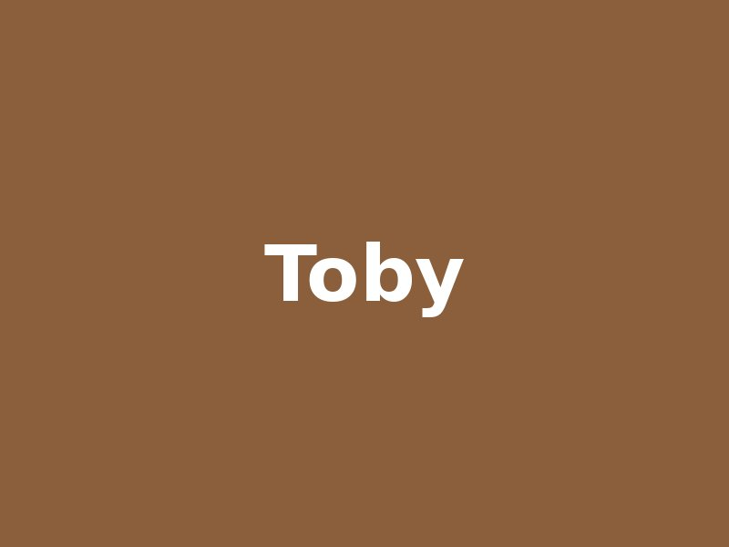

Adopta
Todos nuestros animales se entregan vacunados, desparasitados y con microchip. Si alguno te encaja, escríbenos desde la página de contacto.
Animales en adopción
| Nombre | Especie | Edad | Tamaño | Estado |
|---|---|---|---|---|
| Toby | Perro | 2 años | Mediano | Disponible |
| Luna | Perro | 8 meses | Pequeño | Reservada |
| Rocky | Perro | 6 años | Grande | Disponible |
| Mora | Gata | 3 años | Pequeño | Disponible |
| Nube | Gato | 1 año | Pequeño | En acogida |
| Total: 5 animales | ||||
Algunos de ellos
